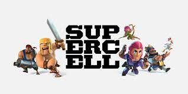
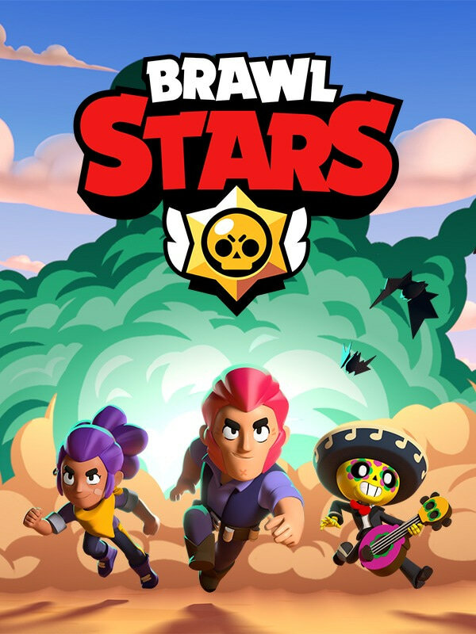
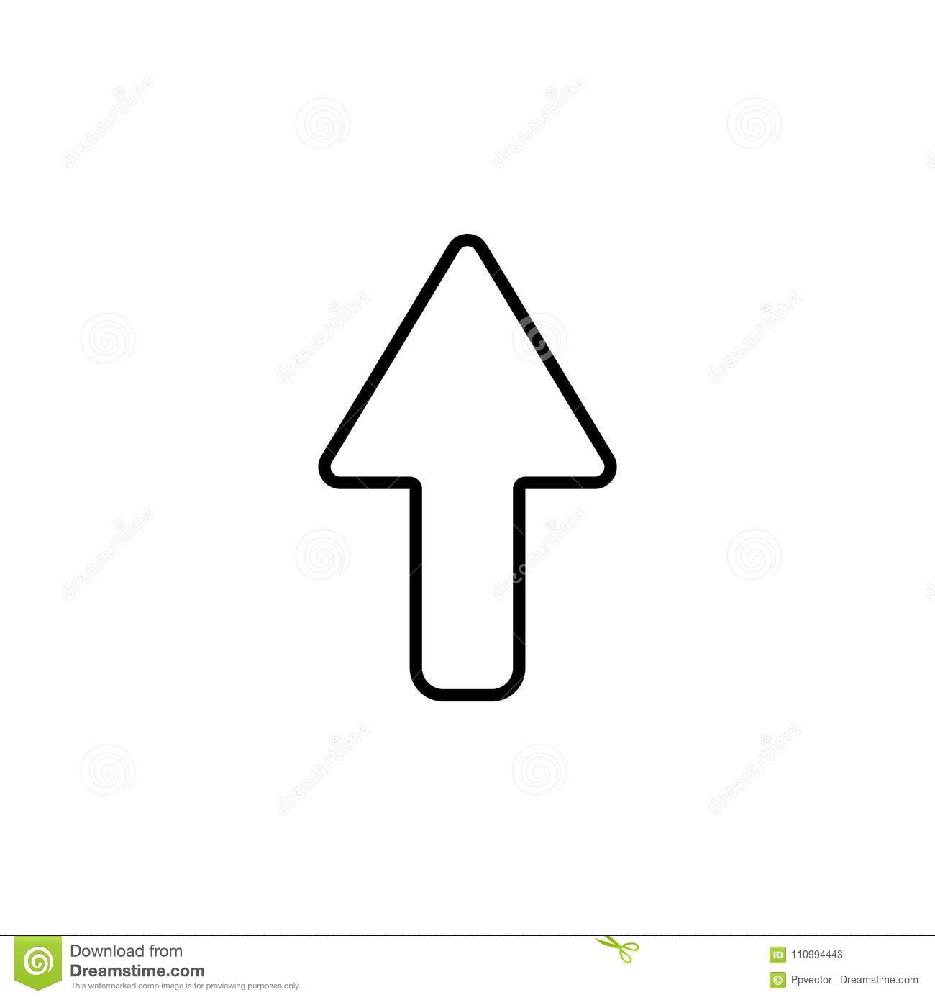
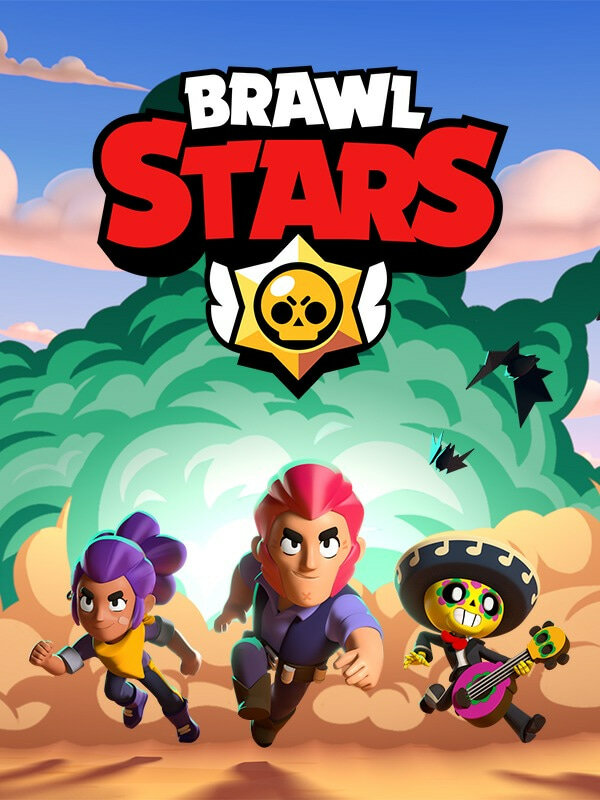
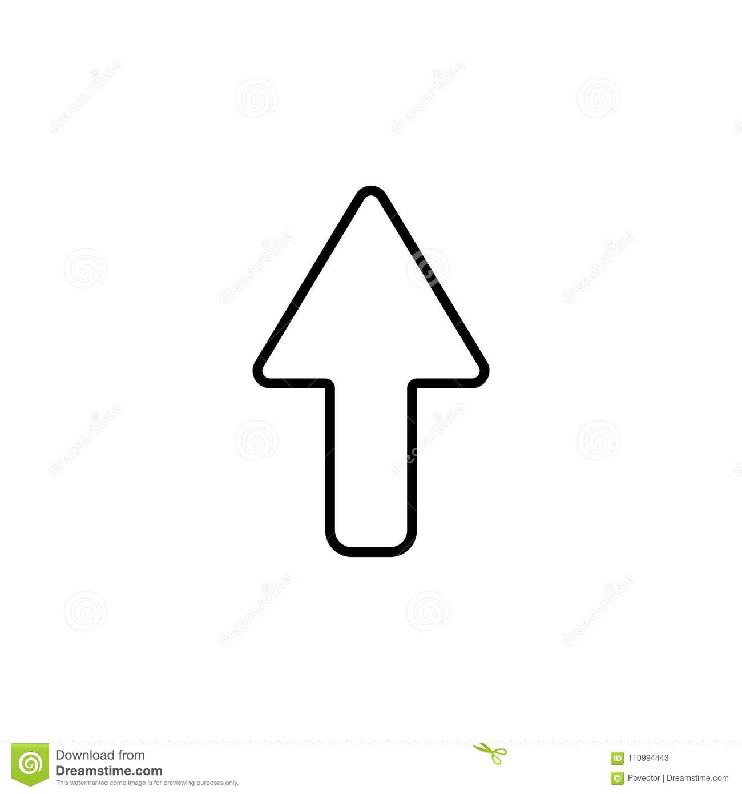

supers
много информации
Компания Supercell была основана Илккой Паананеном и Микко Кодисойей, ранее работавших в мобильной игровой компании Sumea. Кодисойя был одним из основателей Sumea в 1999 году, Илкка Паананен был принят на работу в качестве генерального директора компании в 2000 году. В 2004 году Sumea приобрела компания American Digital Chocolate, разместив в Финляндии свою европейскую штаб-квартиру. Паананен стал управляющим американской компании в Европе, Кодисойя сохранил должность креативного директора. В 2010 году оба покинули компанию[4]. Паананен вначале работал в финансовой компании Lifeline Ventures, но затем решил стать предпринимателем. В 2010 году он, Кодисойя, Петри Стурман, Ласси Леппинен (главный программист в Sumea и Digital Chocolate), Виса Форстен и Нико Дером основали в Нииттюкумпу, районе города Эспоо, свою игровую компанию, в которой руководители не должны были вмешиваться в работу разработчиков игр[5]. Кодисойя и Паананен инвестировали в новую компанию 250 000 евро из своих сбережений, сделанных за время работы в Sumea. Кроме того, им удалось получить кредит в размере 400 000 евро от финского агентства по финансированию технологических инноваций Tekes. Ещё одним инвестором стала Lifeline Ventures. Вскоре Supercell привлекла ещё 750 000 евро от нескольких инвесторов, среди которых были London Ventures Partner и Initial Capital.
 одна из самых популярных игр

самая популярная игра

одна из самых популярных игр

самая популярная игра
